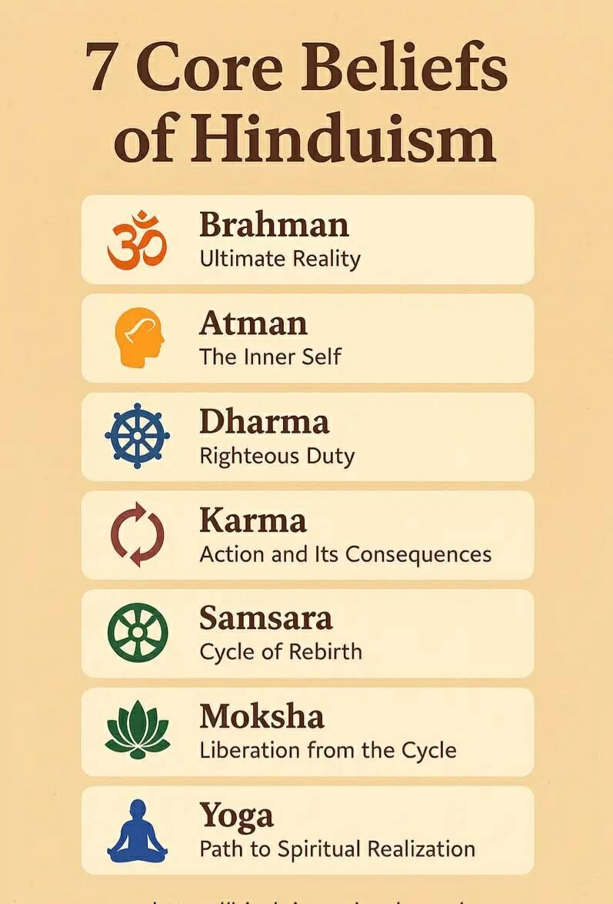
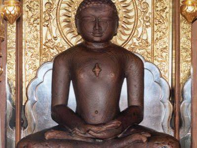
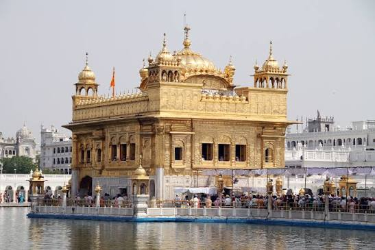
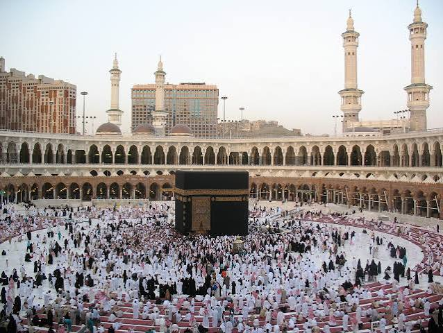

Hinduism
Hindu traditions include a wide variety of beliefs, philosophies, festivals, rituals and spiritual practices.
UNITY IN DIVERSITY
Discover the diverse faiths, beliefs and spiritual traditions that form an important part of Indian culture.
SPIRITUAL HERITAGE
India is known for its rich spiritual heritage and religious diversity. Different communities have contributed to the country's traditions, art, architecture and way of life.

Hindu traditions include a wide variety of beliefs, philosophies, festivals, rituals and spiritual practices.
Buddhism originated in India and emphasizes compassion, wisdom, mindfulness and peaceful living.

Jainism places great importance on non-violence, truth, self-discipline and respect for living beings.

Sikhism teaches equality, honest living, service and devotion while promoting unity among people.

Islam has a long history in India and has contributed significantly to Indian art, architecture, literature and culture.
Christianity is an important part of India's religious diversity and cultural heritage.
INDIAN SPIRITUALITY
Indian culture has a long tradition of spiritual learning, meditation, yoga, prayer and peaceful coexistence. Religious diversity continues to be an important part of India's cultural identity.